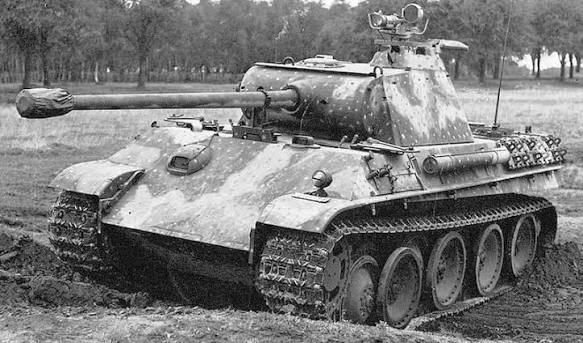
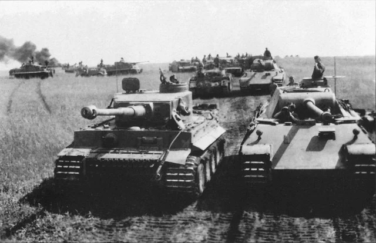
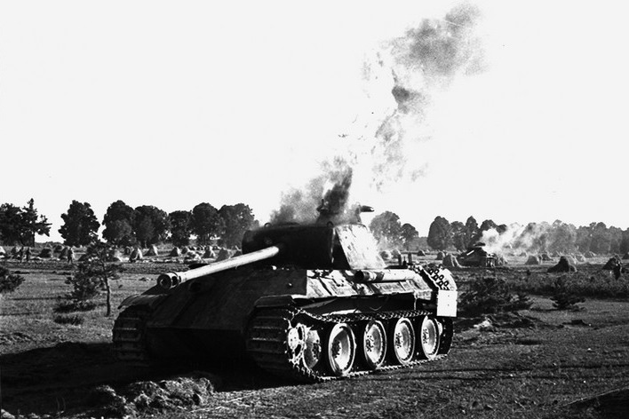
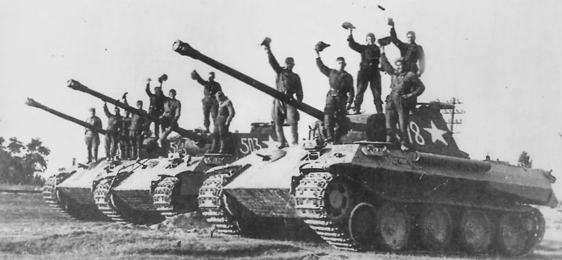
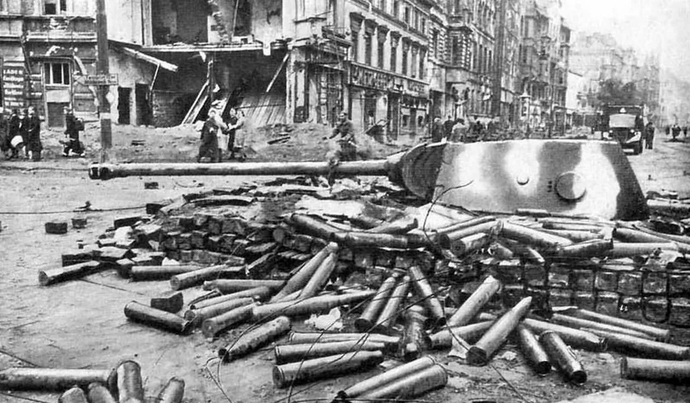

Panther Ausf.G
Giới thiệu
Panther Ausf.G là phiên bản được sản xuất nhiều nhất của dòng xe tăng Panther do Đức phát triển trong Chiến tranh thế giới thứ hai. Xe được thiết kế sau khi quân đội Đức đối đầu với T-34 của Liên Xô và nhận thấy cần một mẫu xe có giáp nghiêng, hỏa lực mạnh và khả năng cơ động tốt hơn.
Mặc dù được Đức xếp vào loại xe tăng hạng trung, Panther có khối lượng gần tương đương một số xe tăng hạng nặng cùng thời. Xe nổi bật nhờ pháo chính có khả năng xuyên giáp mạnh, lớp giáp trước nghiêng và hệ thống ngắm bắn chất lượng cao.
Lịch sử phát triển
Sau khi Đức mở Chiến dịch Barbarossa năm 1941, các đơn vị thiết giáp Đức lần đầu chạm trán T-34. Giáp nghiêng, xích rộng và khả năng cơ động của T-34 tạo ảnh hưởng lớn đến quá trình phát triển Panther.
Panther được đưa vào chiến đấu lần đầu với số lượng lớn tại Trận Kursk năm 1943. Các phiên bản đầu gặp nhiều sự cố về động cơ và truyền động. Phiên bản Ausf.G xuất hiện từ năm 1944, được cải tiến về giáp thân, cửa quan sát, kết cấu sườn và khả năng sản xuất.
Thông số kỹ thuật
| Quốc gia | Đức |
|---|---|
| Phân loại | Xe tăng hạng trung |
| Phiên bản | Panzerkampfwagen V Panther Ausf.G |
| Thời gian phục vụ | 1943–1945 |
| Kíp lái | 5 người |
| Khối lượng | Khoảng 44,8 tấn |
| Chiều dài | Khoảng 8,86 m, tính cả nòng pháo |
| Chiều rộng | Khoảng 3,42 m |
| Chiều cao | Khoảng 2,99 m |
| Động cơ | Maybach HL230 P30 V12 |
| Công suất | Khoảng 700 mã lực |
| Tốc độ tối đa | Khoảng 46–55 km/h trên đường thẳng |
| Tầm hoạt động | Khoảng 200–250 km trên đường |
| Độ dày giáp | Khoảng 16–100 mm tùy vị trí |
Vũ khí
Vũ khí chính của Panther là pháo 7.5 cm KwK 42 L/70. Khẩu pháo này có nòng dài, sơ tốc đầu đạn cao và khả năng xuyên giáp rất tốt. Nó có thể đối đầu hiệu quả với phần lớn xe tăng Đồng Minh ở khoảng cách xa.
- Pháo chính: 75 mm KwK 42 L/70.
- Cơ số đạn pháo: khoảng 79 viên.
- Súng máy đồng trục: MG34 cỡ 7,92 mm.
- Súng máy trước thân xe: MG34 cỡ 7,92 mm.
- Một số xe có giá đỡ súng máy phòng không trên nóc tháp pháo.
Ưu điểm
- Pháo chính có khả năng xuyên giáp và độ chính xác cao ở khoảng cách xa.
- Giáp trước nghiêng giúp tăng hiệu quả bảo vệ mà không cần tăng quá nhiều độ dày.
- Khả năng cơ động tốt so với khối lượng gần 45 tấn.
- Hệ thống ngắm bắn chất lượng cao, hỗ trợ phát hiện và tiêu diệt mục tiêu từ xa.
- Bố trí kíp lái và tháp pháo tương đối hợp lý, giúp phối hợp chiến đấu hiệu quả.
Nhược điểm
- Hộp số và hệ thống truyền động chịu tải lớn, thường gặp sự cố.
- Bánh chịu tải đan xen khiến việc bảo trì và thay thế phức tạp.
- Giáp sườn mỏng hơn nhiều so với giáp trước, dễ bị tấn công từ hai bên.
- Tiêu thụ nhiều nhiên liệu và cần hệ thống hậu cần tốt.
- Chi phí và thời gian sản xuất cao hơn các mẫu xe tăng đơn giản như T-34 hoặc M4 Sherman.
Các trận đánh tiêu biểu
Trận Kursk năm 1943
Kursk là lần đầu Panther được sử dụng với số lượng lớn. Hỏa lực của xe được đánh giá cao, nhưng nhiều chiếc bị loại khỏi vòng chiến do lỗi kỹ thuật, cháy động cơ hoặc hỏng hệ thống truyền động.
Chiến dịch Normandy năm 1944
Tại Normandy, Panther là một trong những đối thủ nguy hiểm nhất đối với M4 Sherman. Giáp trước và pháo mạnh giúp Panther có ưu thế trong các cuộc đấu tăng trực diện, nhưng địa hình hẹp và các đòn không kích làm giảm khả năng cơ động của xe.
Trận Ardennes năm 1944
Panther được sử dụng rộng rãi trong cuộc phản công cuối cùng của Đức tại Mặt trận phía Tây. Tuy nhiên, thiếu nhiên liệu, hỏng hóc và sự kháng cự của Đồng Minh khiến nhiều xe bị bỏ lại.
Các trận phòng thủ năm 1945
Trong những tháng cuối chiến tranh, Panther tiếp tục tham chiến tại Đông Phổ, Hungary và trên hướng tiến về Berlin. Nhiều xe được sử dụng trong vai trò phòng thủ chống lại lực lượng thiết giáp Liên Xô.
Đánh giá tổng quan
Panther Ausf.G là một trong những thiết kế xe tăng có ảnh hưởng lớn nhất của Thế chiến II. Xe sở hữu sự kết hợp hiệu quả giữa hỏa lực, giáp bảo vệ và khả năng cơ động. Trong điều kiện được bảo dưỡng tốt và có kíp lái giàu kinh nghiệm, Panther là một đối thủ rất nguy hiểm.
Tuy nhiên, Panther không hoàn toàn vượt trội trong mọi tình huống. Độ tin cậy cơ khí, nhu cầu bảo dưỡng, tiêu hao nhiên liệu và quy trình sản xuất phức tạp đã hạn chế hiệu quả chiến lược của nó.
Thư viện ảnh tham khảo



